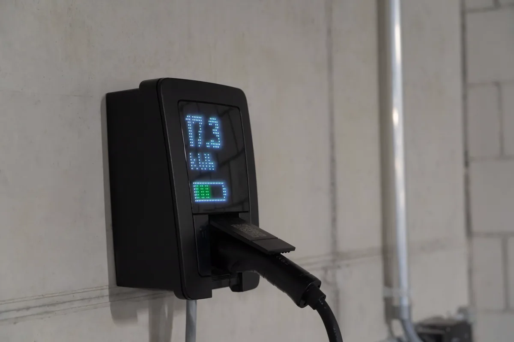
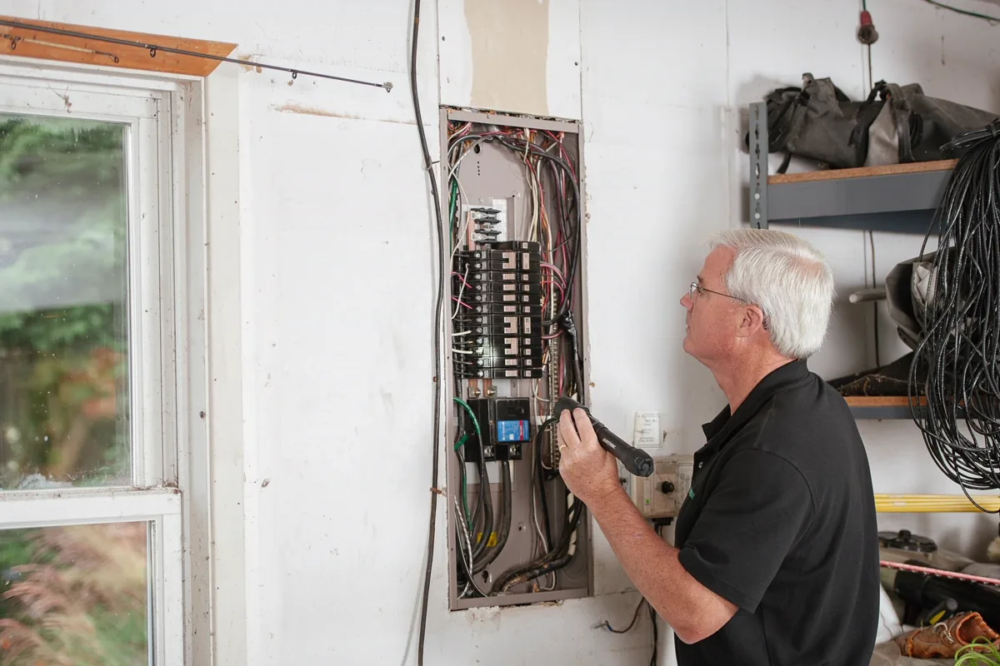

Tomada comum ou wallbox: o que muda na prática
Todo carro elétrico vem com um carregador portátil que liga em tomada. Ele funciona, mas é lento: numa tomada de 220 V a potência fica perto de 2 kW, e uma bateria de 50 kWh leva mais de um dia inteiro para encher do zero. Em 127 V, pior ainda. Além disso, a tomada comum não foi feita para ficar horas seguidas na corrente máxima — é aí que aparecem plugue derretido e fio aquecido dentro da parede.
O wallbox é o carregador fixo de parede. Num circuito monofásico de 220 V e 32 A ele entrega cerca de 7 kW, o que recarrega a mesma bateria durante a noite. Mas ele só é seguro se o circuito que o alimenta for dimensionado para isso, do quadro até a parede. Instalar wallbox é, antes de tudo, um serviço de instalação elétrica.
Esta página trata de casa, sobrado e pequeno comércio. Para vaga em garagem de prédio, o caminho passa por área comum, assembleia e Corpo de Bombeiros — veja a adequação NT 23 para carro elétrico em condomínio. Para estacionamento, loja e frota, veja carregador de carro elétrico para empresas.
O que verificamos antes de instalar
Padrão de entrada e carga contratada
Um wallbox de 7 kW ligado à noite soma ao chuveiro, ao ar-condicionado e ao forno. Se o padrão de entrada e a carga contratada com a EDP não comportam, o disjuntor geral desarma — ou, pior, aquece. Quando é preciso, orientamos o pedido de aumento de carga ou troca de padrão junto à distribuidora antes de instalar.
Quadro de distribuição e aterramento
O carregador precisa de espaço no quadro para disjuntor e DR próprios, barramento em bom estado e aterramento de verdade. Muitos wallbox se recusam a carregar sem terra, e com razão. Quadro antigo, sem DR ou com emendas costuma pedir uma adequação de quadro elétrico junto com a instalação.
Percurso do cabo até a vaga
Distância do quadro até a garagem, passagem por eletroduto existente ou nova tubulação, trecho externo exposto ao sol e à chuva. A distância muda a bitola do cabo: o mesmo carregador a 5 m e a 30 m do quadro pede condutores diferentes para não perder tensão nem aquecer.
Como é a instalação do wallbox
- Circuito exclusivo saindo do quadro, sem dividir com tomada ou iluminação;
- Condutores dimensionados pela corrente do carregador e pela distância, conforme a ABNT NBR 5410;
- Disjuntor compatível com a corrente do carregador e a bitola do cabo;
- Proteção diferencial-residual adequada à recarga: DR tipo A quando o carregador tem detecção interna de fuga em corrente contínua, ou DR tipo B quando não tem — exigência da ABNT NBR 17019 para alimentação de veículos elétricos;
- DPS no quadro, protegendo carregador e veículo contra surtos da rede;
- Aterramento verificado e equipotencialização;
- Fixação do carregador, configuração da corrente máxima e do aplicativo, quando houver;
- Teste de recarga com o veículo e entrega com a identificação do circuito no quadro.
Instalamos o carregador que você já comprou e ajudamos a escolher um modelo compatível com o seu carro e com a sua rede, se você ainda não comprou. Quando a obra pede projeto e responsabilidade técnica, a parte de engenharia segue o mesmo padrão dos nossos laudos técnicos com ART.

Qual potência de wallbox faz sentido
O carro limita a potência que aceita em corrente alternada, e a rede da casa limita o que o carregador pode puxar. Comprar o maior wallbox do catálogo não acelera nada se o carro ou o padrão não acompanham.
- Monofásico 220 V, 32 A — cerca de 7 kW: a escolha mais comum em casa; recarrega a maioria dos carros durante a noite.
- Trifásico: os 11 kW e 22 kW do catálogo são medidos em rede de 380/400 V. Na rede 127/220 V, comum em boa parte da Grande Vitória, a potência real fica bem menor — vale conferir antes de comprar.
- Carregador com ajuste de corrente: permite começar em potência menor e subir depois de um aumento de carga, sem trocar o equipamento.
Como conduzimos o serviço
Fotos e conversa
Você manda foto do quadro, do padrão de entrada e do local da vaga, com o modelo do carro e do carregador.
Visita técnica
Conferimos carga, quadro, aterramento e percurso do cabo, e definimos o que precisa ser adequado.
Orçamento fechado
Material, mão de obra e eventual adequação do quadro discriminados, sem surpresa no dia.
Instalação e teste
Circuito, proteções, fixação, configuração e recarga de teste com o veículo antes da entrega.

Erros comuns na instalação de carregador em casa
| Erro | Consequência |
|---|---|
| Carregador portátil ligado em extensão ou benjamim | Aquecimento do plugue e risco de incêndio |
| Wallbox ligado em circuito que já alimenta tomadas | Disjuntor desarmando no meio da noite e cabo sobrecarregado |
| Cabo dimensionado só pela corrente, sem considerar distância | Queda de tensão, recarga lenta e aquecimento do condutor |
| DR comum que não detecta fuga em corrente contínua | Proteção que não atua no tipo de falha típico da recarga |
| Instalação sem aterramento | Carregador que não libera a recarga ou carcaça energizada |
| Sem verificar a carga contratada | Disjuntor geral desarmando quando chuveiro e carregador ligam juntos |
Perguntas frequentes sobre instalação de wallbox
Posso carregar o carro elétrico numa tomada comum?
Pode, com o carregador portátil que vem com o carro, desde que a tomada e o circuito estejam em bom estado e não haja extensão no caminho. Mas a recarga é lenta, perto de 2 kW em 220 V, e a tomada fica horas na corrente máxima. Para uso diário, o wallbox em circuito dedicado é mais rápido e mais seguro.
Preciso trocar o padrão de entrada para instalar wallbox?
Depende da carga que a casa já tem e da potência do carregador. Em muitos casos o padrão comporta um wallbox de 7 kW; em outros é preciso pedir aumento de carga à EDP. Isso é verificado na visita, antes de qualquer compra de material.
Qualquer wallbox serve para o meu carro?
O conector Tipo 2 é o padrão dos carros vendidos no Brasil, mas a potência aceita em corrente alternada varia de modelo para modelo. Um carro que aceita 7 kW não carrega mais rápido num wallbox de 22 kW. Ajudamos a escolher um carregador compatível com o carro e com a rede da casa.
Quanto tempo demora a instalação?
Em casa com quadro próximo à garagem e padrão adequado, a instalação costuma ser feita em um dia. Quando há passagem de cabo longa, nova tubulação ou adequação do quadro, o prazo é informado no orçamento.
Vocês vendem o carregador?
Instalamos o carregador que o cliente já comprou e orientamos a escolha de um modelo compatível para quem ainda não comprou. O orçamento separa material e mão de obra.
Instalação de wallbox na Grande Vitória
Atendemos casas, sobrados e pequenos comércios em toda a região:
Comprou ou vai comprar um carro elétrico?
Mande foto do quadro, do padrão e da vaga. Respondemos com o que precisa ser feito e o orçamento.
Continue lendo
- Calculadora: meu padrão aguenta um wallbox?
- Carregador em condomínio: passo a passo e modelo de ata
- Carregador de carro elétrico para empresas e estacionamentos
- Montagem e adequação de quadro elétrico
- Adequação NT 23 para carro elétrico em condomínio
- Instalação de sistema de incêndio e SPDA
- Laudos técnicos e ART
- Página inicial — todos os serviços de engenharia